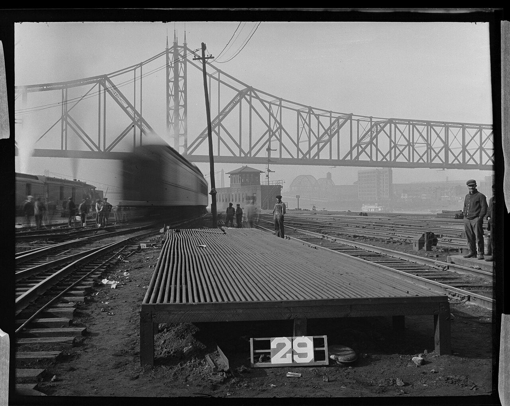
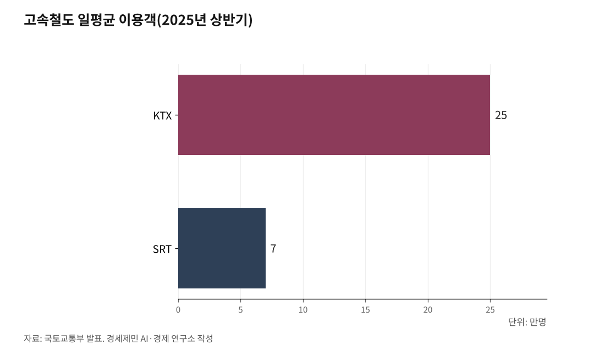

고속철도 매진인데 심야 운행 멈추는 이유, 새벽 5~6시간 정비 공백
자정부터 새벽 5시까지 KTX·SRT 정규 여객 운행 중단, 표 부족에도 비워둔다
중국 천창 0시 30분 작업 시작, 일본 신칸센 1964년 개통 이래 0~6시 원칙 60여년 유지
다섯 국제 철도 기구가 100여년 발전시킨 안전·표준 규범 결과
AI경제저널=김갑봉 기자 | 명절 연휴 첫날, KTX(Korea Train eXpress, 한국 고속철도) 예매창은 30초 만에 닫힌다. 주말 부산행 표도 일주일 전부터 구하기 어렵다. 그런데 자정이 지나면 정규 여객 열차는 멈춘다.

새벽 5시 전까지 KTX와 SRT(Super Rapid Train, 수서발 고속철도)는 한 편도 운행하지 않는다. 표가 모자라 발을 동동 구르는 시간에 정규 여객 운행은 비어 있다. 왜인가.
KTX·SRT 첫차 새벽 5시, 막차 끝난 뒤 5시간 정규 여객 공백
코레일(Korail, 한국철도공사)이 운영하는 KTX와 에스알(SR, SRT 운영사)이 운영하는 SRT는 첫차가 새벽 5시에 출발한다. 코레일은 2013년 9월 부산~서울 구간 KTX 첫차를 일요일 새벽 5시에 정시 출발시켰다고 밝혔다. SR은 2016년 12월 9일 SRT 정식 운행 개시 시점에 새벽 5시 첫차로 영업을 시작했다.
국토교통부 발표를 보면 2025년 상반기 국내 고속철도 이용객은 5825만명으로 전년 대비 1.6% 늘었다. KTX 일평균 이용객은 25만명, SRT는 7만명이다. 외국인 이용객은 한 해 사이 13.4% 늘었다.
표 구매가 어려워지자 예매 후 무단 미탑승, 이른바 노쇼(no-show, 예약 후 무단 미탑승) 문제가 커졌다. 국토교통부와 코레일·SR은 2024년 말부터 반환 수수료를 조정했다. 그 결과 주말 기준 하루 KTX 2647석, SRT 886석이 사실상 추가 공급된 효과가 났다.
표가 모자란데도 자정 무렵 막차가 도착하면 정규 여객 운행은 끝난다. 새벽 5시 첫차 출발까지 약 5시간 동안 정규 여객 열차는 운행하지 않는다. 이는 한국만의 일이 아니다.

중국 천창(天窗) 0시 30분 작업 시작해 새벽 3시까지 끝낸다
중국도 똑같다. 중국 국철집단(中国国家铁路集团, 중궈 궈자 톄루 지퇀)이 2021년 8월 공식 보도에서 고속철도 야간 정비 실태를 공개했다. 작업자들은 밤 11시 30분에 현장에 도착한다.
새벽 0시 30분부터 작업이 시작된다. 작업 시간은 180분이고 그 가운데 순수 작업 시간은 150분이다. 모든 작업은 새벽 3시 전에 끝나야 한다.
4시 30분 작업자들이 철수한다. 새벽 5시에 확인 차량이 정비 완료 선로 위를 지나간다. 그 뒤 첫 고속전철 편성(중국어 동차조·動車組)이 운행을 시작한다.
중국 철도 업계는 이 시간을 천창(天窗, 톈촹)이라 부른다. 하늘로 난 창처럼 잠시 열어두는 정비 시간이라는 뜻이다. 매일 오후 3시에 천창 협조회를 열어 그날 밤 작업 내용을 확정한다.
선로 22개, 레일 갈림 장치(분기기) 143개, 선로 90여km를 정비 인력 21명이 매일 점검한다. 작업자가 차가운 강철 레일 위에 무릎을 꿇고 머리에 쓰는 등(헤드라이트)으로 선로 굴곡을 살피는 시간이 그 새벽이다. 시속 300km로 달리는 고속전철 안전성은 이 야간 점검 체계가 떠받친다.
일본 신칸센 1964년 개통 이래 0~6시 원칙, 프랑스도 미국도 같다
일본 신칸센도 같은 원칙이다. 일본 철도 전문 매체 트래블 워치(Travel Watch)에 실린 이노우에 코지(井上孝司) 기사를 보면 영업 열차 운행 시간대와 시설·설비 점검 시간대를 완전히 분리한다. 후자는 기본적으로 0시에서 6시 사이다.
이노우에는 "그 6시간을 통째로 다 쓸 수 있는 것은 아니다"라고 짚었다. 선로 안에 들어가 작업을 시작해 끝나고 빠져나올 때까지 시간은 3시간에서 3시간 반 정도다. 신칸센은 1964년 개통 이래 60여년 동안 이 원칙을 지켜 왔다.
일본 철도 매체 리스폰스(Response.jp) 보도를 보면 신칸센은 정비 작업 때문에 자정 넘긴 운행을 안 하는 것이 원칙이다. 1964년 개통 직후 야간 화물 열차 운행 계획이 있었으나 이용객이 늘어 새벽 정비 부담이 커지자 0시에서 6시까지 운행 자체가 어려워졌다. 야간 화물 열차 계획은 사라졌다.
도쿄 올림픽 같은 특별한 사정으로 임시 야간 열차가 운행된 사례는 있다. 그러나 정규 야간 운행은 60여년 동안 한 번도 없었다. 일본 철도 업계는 야간 정비 시간을 보수간합(保守間合い, 호슈마아이)이라 부른다.
정비 작업 시간 사이라는 뜻이다. 프랑스 고속선도 같다. 프랑스 고속선 엘제베 세아(LGV SEA, Ligne à Grande Vitesse Sud Europe Atlantique, 프랑스 남유럽-대서양 고속선, 투르~보르도) 운영사 빈치 콘세시옹(Vinci Concessions) 자회사 메세아(MESEA, Maintenance et Exploitation Sud Europe Atlantique, 엘제베 세아 정비 운영사)가 펴낸 정비 보도에 정확한 시간이 나와 있다.
정비 팀은 밤 9시 30분에 정비 기지에 도착한다. 실제 작업은 밤 11시 이후에 시작된다. 그 시간이 돼야 열차 운행이 끝나기 때문이다.
11시 전까지는 안전 점검과 사전 준비를 한다. 작업 책임자는 프랑스 국유 철도(SNCF, Société nationale des chemins de fer français, 소시에테 나시오날 데 슈맹 드 페르 프랑세)에 노선 폐쇄를 요청한다. 전기 차단 담당자는 전력 공급이 완전히 끊겼는지 확인한다.
표준 작업 시간은 5시간이다. 일반 선로 점검부터 가공 전차선(공중에 매단 전기 공급선) 보수, 접촉선 교체까지 모두 같은 5시간 안에 끝내야 한다. 미국 캘리포니아 고속철도는 2026년 5월 현재 아직 상업 운영을 시작하지 않았다.
캘리포니아 고속철도청(California High-Speed Rail Authority) 공식 페이지(Maintenance Facilities)는 다음과 같이 적시한다. "고속열차가 주야로 운행하므로 세 개 교대 근무로 정비 활동이 24시간 운영된다." "열차 운행 일정에 미치는 영향을 최소화하고자 주요 정비 작업 대부분은 밤 10시부터 새벽 6시 사이에 야간 진행된다."
운영을 시작하지 않은 미국조차 운영 계획 단계에서부터 야간 5~6시간 정비 시간 확보를 설계에 반영했다. 이름은 다 다르다. 한국은 정비 시간, 중국은 천창(天窗), 일본은 보수간합(保守間合い)이다.
운영 원칙은 같다. 매일 야간 5~6시간 동안 고속선로 정규 여객 운행을 멈추고 정비에 들어간다. 이 원칙은 우연이 아니다.
다섯 국제 철도 기구가 안전·표준·운송 규범을 발전시켰다
국제철도연맹(UIC), 유럽연합철도청(ERA), 국제철도수송정부간기구(OTIF), 철도협력기구(OSJD), 국제철도수송위원회(CIT)가 있다. 다섯 국제 철도 기구가 100여년에 걸쳐 철도 안전·표준·운송 규범을 발전시켜 왔다. 다섯 기구가 "0시에서 6시 정비"라는 단일 시간 규정을 직접 제정한 것은 아니다.
다섯 기구가 만든 안전·상호 운용성(서로 다른 나라 철도가 호환되는 성질) 표준을 바탕으로 각국 운영사가 야간에 충분한 유지 보수 시간을 확보하는 운영 관행을 채택했다. 시속 200~300km급 고속철도 야간 유지 보수 원칙은 1964년 신칸센 개통 이후 정립됐다. 가장 오래된 곳이 국제철도연맹(UIC, Union internationale des chemins de fer, 위니옹 앵테르나시오날 데 슈맹 드 페르)이다.
UIC는 1922년 10월 17일 프랑스 파리에서 설립됐다. 본부는 파리 16 Rue Jean Rey이고 회원은 2026년 5월 기준 223개에 이른다. UIC는 1922년 이래 표준 제정 기구로 활동해 왔다.
UIC 코드(UIC code, 철도 표준 번호 체계), UIC 리플릿(UIC leaflets, 표준 안내 문서), 국제철도표준(IRS, International Railway Solutions, 인터내셔널 레일웨이 솔루션스)이 철도 시스템 설계·건설·운영·정비 공통 규칙을 담는다. 한국철도공사가 회원이다. UIC가 펴낸 IRS 정의는 "철도 부문에서 사용하고자 UIC가 작성·발간하는 문서 체계이며, 철도 시스템과 철도 부문 서비스 설계·건설·운영·정비를 떠받치는 다양한 자발적 솔루션을 묶은 것"이다.
EU(유럽연합) 차원에는 유럽연합철도청(ERA, European Union Agency for Railways, 유로피언 유니언 에이전시 포 레일웨이즈)이 있다. 본부는 프랑스 발랑시엔(Valenciennes, 발랑시엔)이다. 2004년 EU 규정 881/2004로 설립돼 2005년 가동했다.
2016년 4차 철도 패키지로 현재 명칭이 됐다. 기술 상호 운용성 표준(TSI, Technical Specifications for Interoperability, EU 회원국 철도가 서로 호환되도록 기술 사양을 통일한 규정)으로 EU 회원국 고속철도 설계·운영·정비 기준을 규율한다. 법률 차원에는 국제철도수송정부간기구(OTIF, Organisation intergouvernementale pour les Transports Internationaux Ferroviaires, 오르가니자시옹 앵테르구베르느망탈 푸르 레 트랑스포르 앵테르나시오노 페로비에르)가 있다.
OTIF 본부는 스위스 베른(Bern, 베른)이다. 전신은 1893년 설립된 국제철도운송중앙사무소(OCTI, Office central des transports internationaux par chemins de fer, 옥티)이고 1985년 5월 1일 OTIF로 출범했다. 1980년 베른에서 체결된 국제철도수송협약(COTIF, Convention concerning International Carriage by Rail, 국제 철도 수송에 관한 협약) 아래 국제 철도 운송 법률을 통일했고 2011년 EU도 가입했다.
동유럽·아시아권에는 철도협력기구(OSJD, Organization for Cooperation Between Railways, 오거나이제이션 포 코퍼레이션 비트윈 레일웨이즈)가 있다. 본부는 폴란드 바르샤바(Warsaw, 바르샤바)이고 1956년 6월 28일 불가리아 소피아(Sofia, 소피아)에서 설립됐다. 설립국 8개는 불가리아·헝가리·동독·중국·북한·몽골·소련·체코슬로바키아였다.
OSJD는 1520mm 광궤(러시아·동유럽이 쓰는 넓은 궤간)와 1435mm 표준궤(국제 표준 궤간)를 모두 다룬다. 시베리아횡단철도(TSR, Trans-Siberian Railway)·중국횡단철도(TCR, Trans-China Railway) 등 유라시아 화물 운송 회랑을 운영한다. OSJD는 올해로 70주년이다.
운송법 실무에는 국제철도수송위원회(CIT, Comité International des Transports Ferroviaires, 코미테 앵테르나시오날 데 트랑스포르 페로비에르)가 있다. 본부는 스위스 베른이고 1902년 4월 26일 이탈리아 밀라노(Milan, 밀라노)에서 설립됐다. 다섯 기구가 발전시켜 온 안전·표준·운송 규범을 바탕으로 각국 고속철도 운영사는 매일 5~6시간 정도를 영업 중단 시간으로 두고 유지 보수를 실시한다.
이 정도 야간 유지 보수 시간 확보가 시속 300km급 고속 운행 안전을 뒷받침하는 운영 관행으로 자리 잡았다. 지속적 점검이 이뤄지지 않으면 작은 결함이 중대 사고로 번질 위험이 커진다.
한국 약 1200km, 중국 4만8000km, 운영 거리 다르지만 원칙 같다
한국 고속·준고속철도 운영 거리는 약 1200km다. 중국 4만8000km(2024년 말, 국철집단 발표)와 견주면 40분의 1이 안 된다. 한국 정부는 제4차 국가철도망 구축계획(2021~2030)에서 전체 철도망을 2019년 4274km에서 2030년 5341km로 늘리는 목표를 세웠다.
중국 정부는 2030년까지 고속철도 6만km를 목표로 삼는다. 운영 거리 차이는 크지만 운영 원칙은 같다. 한국이든 중국이든 매일 야간 5~6시간을 정비 시간으로 비워 둔다.
한국 KTX는 경부고속선만 경유하지 않는다. 위키백과 경부고속철도 항목을 보면 "경부고속철도는 경부고속선만 경유하지 않고, 경부본선 등 노선을 이용한 운행 계통"이다. 수원 경유 KTX는 서울부터 대전까지, 구포 경유 KTX는 동대구부터 부산까지 각각 경부본선(재래선)만을 경유해 운행한다.
한국 KTX는 고속 전용선과 재래선 양쪽을 동시에 돌봐야 하는 부담이 있다. 중국 팔종팔횡(八縱八橫, 바쭝바헝, 8개 종축·8개 횡축 고속철도망)은 100% 신규 고속 전용선이라 그 부담이 없다. 한국 정비 부담이 결코 가볍지 않다는 점은 국토교통부 통계가 보여 준다.
국토교통부 발표를 보면 SR은 철도 안전을 강화하고자 2024년 12월 정비 편성을 늘렸다. 그 결과 주말 SRT 공급이 중련(여러 편성을 연결해 운행)에서 단편성(한 편성으로만 운행)으로 줄어 일 4000여 석이 감소했다. 표 구하기가 더 어려워졌지만 정비 편성 확대는 멈추지 않았다.
표가 모자라도 정비를 줄일 수 없다.
비어 있는 5~6시간이 다음 날 만석 열차 안전 떠받친다
표가 매진되는 만큼 야간 KTX 운행 요구는 자주 제기된다. 매일 5~6시간 동안 정규 여객 운행을 멈추지 않으면 시속 300km 안전성에 위험이 커진다. 한국·중국·일본·프랑스 모두 야간 정비 시간 확보를 운영 원칙으로 지켜 왔다.
미국 캘리포니아 고속철도는 운영 계획 단계에서부터 같은 원칙을 설계에 반영했다. 비어 있는 5~6시간은 낭비가 아니다. 다음 날 만석 열차를 안전하게 달리게 하는 시간이다.
중국 국철집단 선로 22개, 레일 갈림 장치 143개, 선로 90여km를 매일 점검하는 정비 인력 21명이 새벽 0시 30분에 작업을 시작하지 않으면 그 다음 날 시속 300km 안전성은 뒷받침되지 않는다. 일본 신칸센이 1964년 개통 이래 60여년 동안 0~6시 원칙을 지킨 이유, 프랑스 고속선 엘제베가 매일 5시간 선로를 비우는 이유, 미국 캘리포니아 고속철도청이 22시부터 6시까지 정비 시간으로 설계한 이유 모두 같다. 매진된 표만큼이나 비어 있는 5~6시간이 결정적이다.
한국 고속철도가 약 1200km로 짧지만 정비 부담을 그대로 진다는 점은 우연이 아니다. 다섯 국제 철도 기구가 100여년에 걸쳐 발전시켜 온 안전·표준·운송 규범을 바탕으로 각국 운영사가 채택한 야간 정비 관행이 한국 선로 위에서도 매일 새벽 지켜진다.
※ 이 기사는 AI 프로그램 클로드 4.1을 활용해 작성했습니다.
참고문헌
· "段彪：'天窗'作业是高铁安全的'体检'", 중국 국철집단(中国国家铁路集团有限公司), 2021.8.29., http://www.china-railway.com.cn/xwzx/zhxw/202108/t20210829_116756.html
· "A night with the high-speed rail maintenance teams(고속철도 정비 팀과 함께한 하룻밤)", 빈치 콘세시옹·메세아(Vinci Concessions/MESEA, 프랑스 엘제베 세아 운영사), 2019.6.19., https://www.vinci-concessions.com/en/night-with-the-high-speed-rail-maintenance-teams
· "Maintenance Facilities(정비 시설)", 캘리포니아 고속철도청(California High-Speed Rail Authority), https://hsr.ca.gov/about/maintenancefacilities/
· "新幹線では夜間に何が行なわれているのか(신칸센은 야간에 어떤 작업을 하는가)", 이노우에 코지(井上孝司), 트래블 워치(トラベル Watch), 2023.2.14., https://travel.watch.impress.co.jp/docs/series/inoue/1478560.html
· "表定速度は100km/h以下、東京オリンピック2020の「夜行新幹線」(표정 속도 100km/h 이하, 도쿄 올림픽 2020의 야간 신칸센)", 리스폰스(Response.jp), 2021.7.1., https://response.jp/article/2021/07/01/347253.html
· "新幹線で夜行列車が走っていないのはなぜ(신칸센에 야간 열차가 다니지 않는 이유)", 노리모노 뉴스(乗りものニュース), https://trafficnews.jp/post/80517
· "About UIC(국제철도연맹 소개)", 국제철도연맹(UIC), 2024.10.9., https://uic.org/about/about-uic/
· "Standardisation: the UIC role(표준화: 국제철도연맹의 역할)", 국제철도연맹(UIC), 2024.1.16., https://uic.org/standardisation/
· "International Railway Solutions(국제철도표준)", 국제철도연맹(UIC), https://uic.org/standardisation/article/irs
· "Vision, Mission, Values & Tasks(비전·임무·가치·과제)", 유럽연합철도청(ERA), https://www.era.europa.eu/agency-you/agency/vision-mission-values-tasks
· "OTIF 공식 사이트", 국제철도수송정부간기구(OTIF), https://otif.org/en/
· "History of OSJD foundation and development(철도협력기구 설립과 발전 연혁)", 철도협력기구(OSJD), https://en.osjd.org/en/9176
· "CIT History(국제철도수송위원회 연혁)", 국제철도수송위원회(CIT), https://cit-rail.org/en/history/
· "International Union of Railways(국제철도연맹)", 위키백과, 2025.9. 갱신 기준, https://en.wikipedia.org/wiki/International_Union_of_Railways
· "2025년 상반기 KTX·SRT 등 고속철도 이용 5825만 명, 외국인 이용객 13.4% 증가", 국토교통부, 경기도교통정보센터 게시, 2025년 상반기, https://gits.gg.go.kr/
· "Seoul-Busan rail traffic returns to normal after train collisions(열차 충돌 사고 이후 서울-부산 철도 운행 정상화)", 코리아 헤럴드(Korea Herald, 한국철도공사 공식 발언 인용), 2013.9.1., https://m.koreaherald.com/amp/view.php?ud=20130901000164
· "수서고속철도 SRT 개통식 개최…9일 오전 5시부터 운행", 동아일보(SR 개통 공식 발표 인용), 2016.12.8.
· "수서발 고속철도 개통…새벽 5시부터 운행", YTN, 김종욱 기자, 2016.2.1.
· "4.8万公里！我国高铁运营里程再创新纪录(4만8000km 중국 고속철도 운영 거리 신기록 갱신)", 중국 정부망(中国政府网), 2025.1.2., https://www.gov.cn/yaowen/liebiao/202501/content_6995868.htm
· "제4차 국가철도망 구축계획(2021~2030)", 국가철도공단, 2021.7.5., https://www.kr.or.kr/sub/info.do?m=05010101
사진 출처
· [대표사진] Pittsburgh and Lake Erie Railroad Company, "Track Maintenance (8223.A902.RR).jpg", 위키미디어 공용, 퍼블릭 도메인, https://commons.wikimedia.org/wiki/File:Track_Maintenance_(8223.A902.RR).jpg
※ 이 기사는 인공지능을 활용해 작성했습니다.
관련기사
- 코레일 사장이 15년만에 KTX 요금 현실화 꺼낸 이유
- 강호축 준고속철도, 2031년 강릉-목포 4시간으로 연결
- [환황해 철도망⑧] 열차페리 1~3년, 해저터널 10년 뒤... 첫 단추는 인천신항 인입선
- [환황해 철도망⑦] 제재 밖 북한 텅스텐, 3월 3257만달러에서 8월 28만달러로
저작권자 © AI경제저널 무단전재 및 재배포, AI학습 및 활용 금지